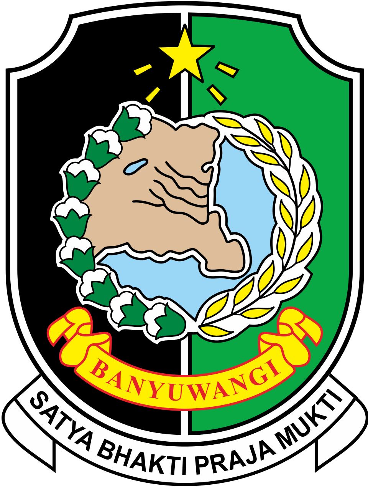
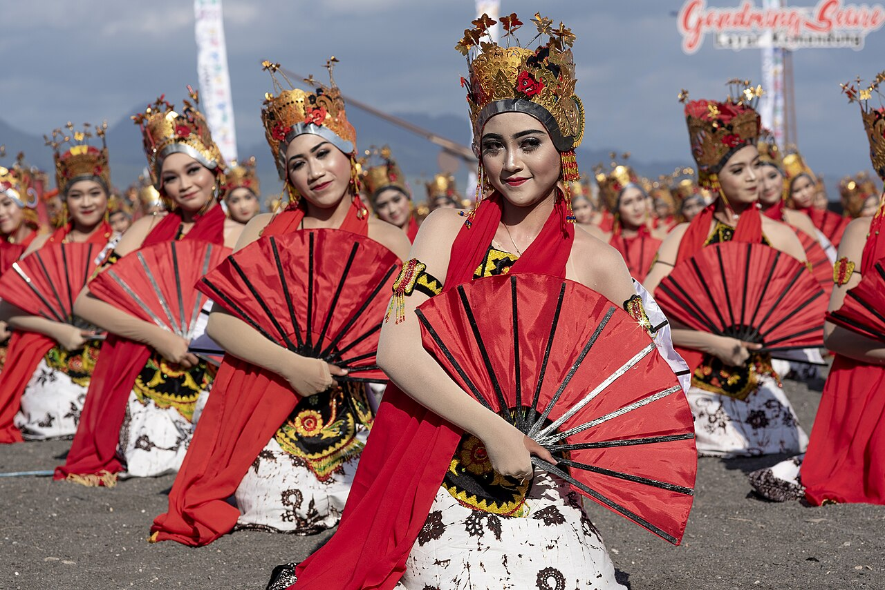

Wastra Tradisional
Wastra Tradisional
Batik Tulis Motif Gajah Oling
Motif tertua suku Using melambangkan kepasrahan kepada Tuhan Yang Maha Esa, menggunakan pewarna alami getah mangrove dan daun tarum.

Mengakselerasi ekosistem 17 subsektor ekonomi kreatif, inkubasi produk lokal unggulan kriya dan kuliner, perlindungan Hak Kekayaan Intelektual (HKI), serta digitalisasi pasar UMKM kreatif Banyuwangi.
Inkubasi bisnis rintisan kreatif, kurasi produk ekspor, pendampingan packaging modern ramah lingkungan, dan program sertifikasi halal UMKM.
Klinik konsultasi dan pembiayaan pendaftaran merek, hak cipta karya seni, desain industri, dan indikasi geografis komoditas Banyuwangi.
Menghubungkan perajin lokal dengan industri perhotelan, ritel modern, marketplace e-commerce, serta pameran kriya nasional dan internasional.
Wastra Tradisional
Motif tertua suku Using melambangkan kepasrahan kepada Tuhan Yang Maha Esa, menggunakan pewarna alami getah mangrove dan daun tarum.
 Kriya Bambu
Kriya Bambu
Karya anyaman bambu bernilai seni tinggi, mulai dari lampion interior, perabot meja kursi etnik, hingga souvenir ekspor mancanegara.
 Kuliner & Kopi
Kuliner & Kopi
Kopi lereng vulkanik bersertifikasi Indikasi Geografis (IG), cita rasa khas floral chocolaty dan keasaman seimbang yang diekspor ke Eropa.
 Kuliner Warisan
Kuliner Warisan
Makanan khas pedas sambal tomat ranti segar, rujak soto kuah gurih, dan kue kering legendaris bagiak rasa jahe pandan rempah.

Kriya & MusikPembuatan gamelan pelog slendro Using, angklung paglak dari bambu wulung, serta replika cenderamata mahkota penari Gandrung Omprok.
 Digital & Desain
Digital & Desain
Hub kolaboratif kreator konten visual, videografi lanskap pariwisata, desain grafis kemasan produk, dan inkubasi startup lokal.
Daftarkan karya cipta merek dagang Anda atau ikuti program kurasi produk ekraf Banyuwangi ke kancah nasional.